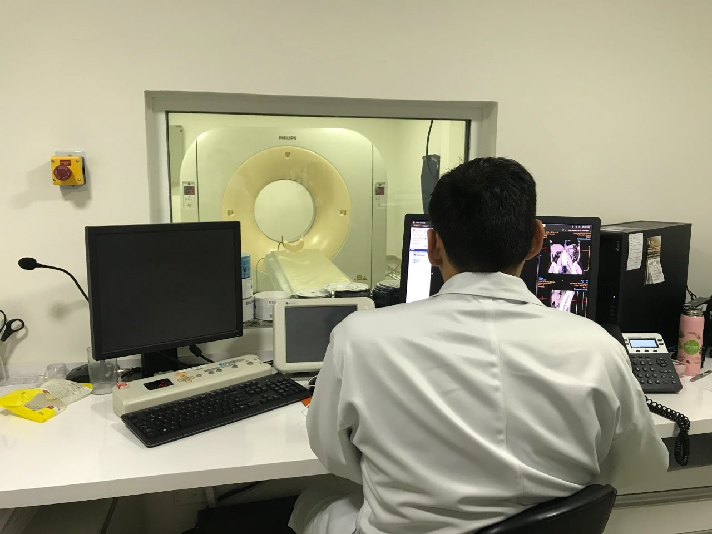
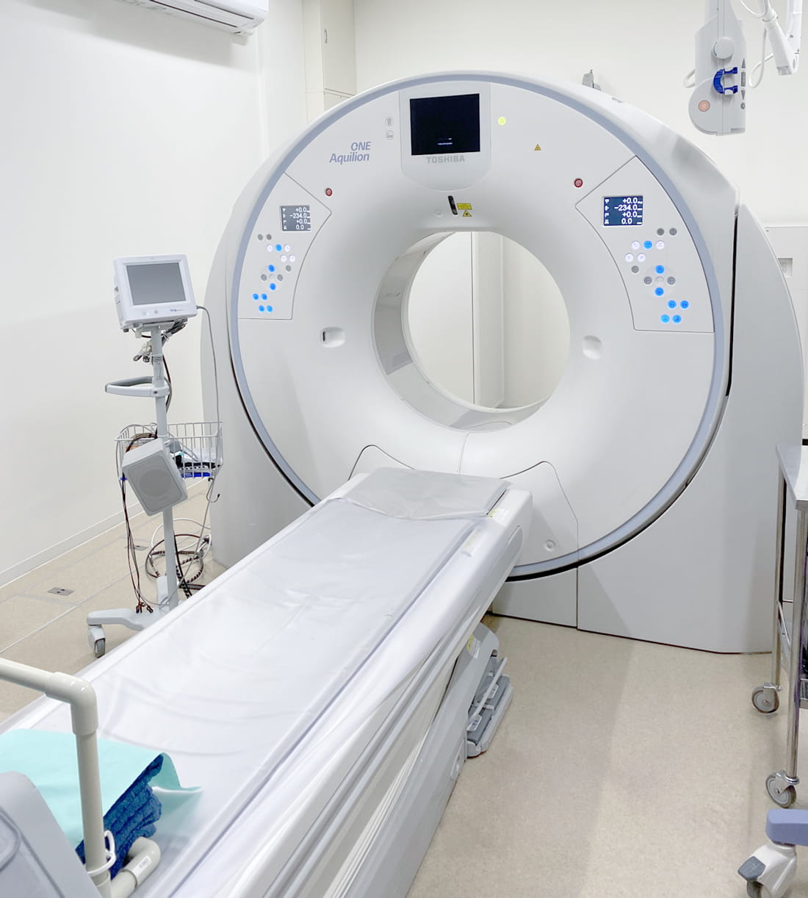
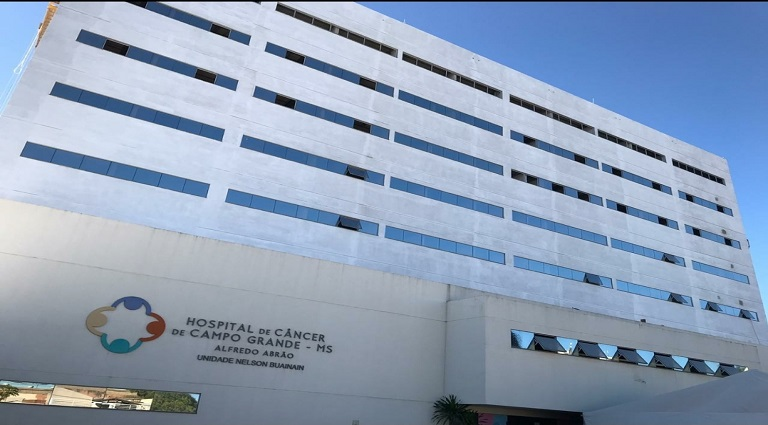
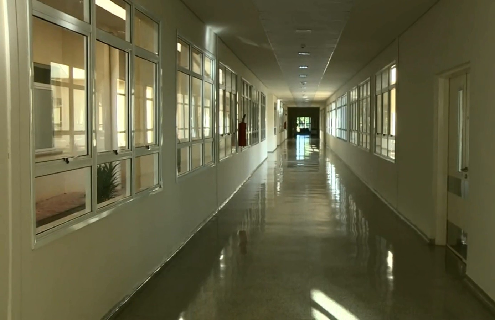
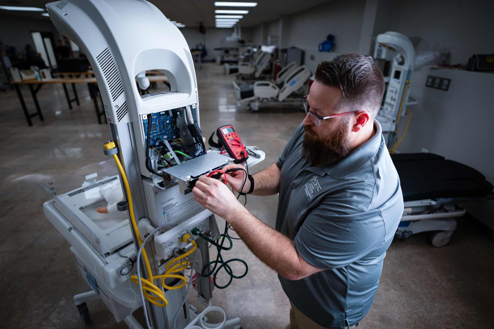
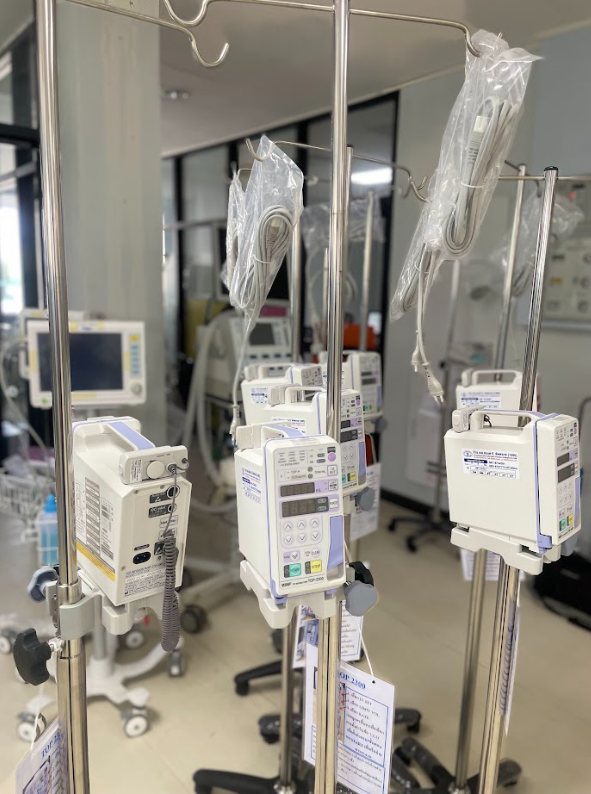
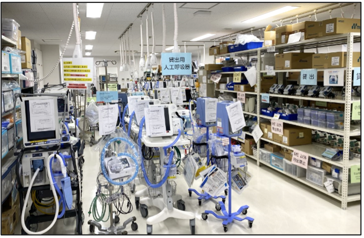

01 · TEMPO PARADODADOS DO HCAA
CAMPO GRANDE · 2022

01 · TEMPO PARADO
02 · IMPACTO NOS EXAMES
03 · CUSTO DO REPARO
04 · PIRACICABA/SP · 2024
05 · IPANEMA/RJ · 2023a manutenção curativa
em relação à preditiva
equipamentos médico-hospitalares
no SUS
RECORTE HISTÓRICO · 2015
das falhas notificadas
sem classificação de tipo
ESTIMATIVAde perda com um
tomógrafo parado
recuperados por busca

Busca simulada: 15 → 5 min
preservados na agenda por mês
Remarcações simuladas: 10 → 4 / mês
sem atraso por indisponibilidade, por mês
Atrasos simulados: 6 → 2 / mês
no cumprimento dos prazos
Cumprimento simulado: 70% → 95%
recuperadas para a gestão por mês

Consolidação simulada: 16 → 4 h / mês
Valores hipotéticos; não são resultados medidos nem metas validadas do CONSTA.